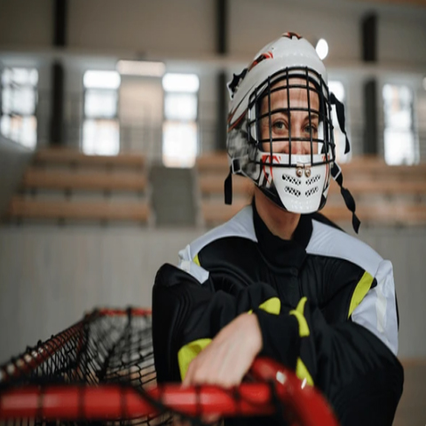

Hyland Hills, Golden, CU Women
Hockey/Goalie Coach
You can’t learn enough about being a goalie by just watching. There are things you don’t understand until you try them. Along with watching great goalies, I attempted to find experts in the area to help me. There weren’t a whole lot of local goalie experts that one could easily locate. One of the beautiful things about hockey is how nice and willing to share most people are (as long as they can determine that you are not in direct competition with them). Other goalies are extremely helpful, but in most cases, they are either misinformed or just plain mistaken. You do learn all the one-liners; don’t go down too early, hug the post, keep your glove up, face the shooter, etc. Every one of these generalities has a true application or a contradiction. You could possibly become and 80% save goalie facing the shooter, but to get to the 90th percentile, you need to center your body on the puck. Grant Fuhr once said, “It’s not how fast you go down, it’s how fast you get up. ”
Skills are things that are learned and developed. Goalies need the ability to start, stop and/or change direction, while staying balanced and under control. Such agility, often termed "athleticism", as well as speed are, two athletic characteristics that were thought to be only "talents" and impossible to coach. As strength and conditioning techniques have progressed, such characteristics have become teachable. Since goaltenders should never wander too far from the net, skating speed should not be much of an issue but quickness and agility are. Elite goaltenders will be one of the best athletes on the team. Goalies should practice by replicating patterns commonly used while making saves. A goalie can improve their athleticism. Studies have shown that 1000 repetitions equate to a learned skill where as 2000 repetitions approach reflex. The game of hockey requires 236 unique skills and it takes approximately 15000 hours to prepare a player for the NHL.